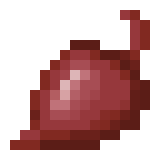
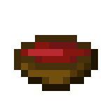
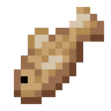
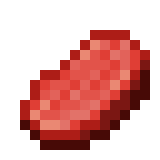

-
Batata

Batatas são alimentos que podem ser plantados, consumidos cru, ou assados em uma fornalha ou uma fogueira para fazer batatas assadas.
-
Batata Assada

Uma batata assada é um item de alimento que pode ser consumido pelo jogador.
-
Cenoura
Uma cenoura é um item de alimento que pode ser comido pelo jogador.
-
Cenoura Dourada

A cenoura dourada é um item de alimento valioso e um ingrediente de fermentação.
-
Beterraba
Beterrabas são semelhantes as cenouras e batatas. Elas funcionam como trigo: deixam cair tanto um item alimentar, e sementes que podem ser então replantadas em terra arada.
-
Ensopado de Beterraba
Ensopado de beterraba ou sopa de beterraba é um item de alimento líquido.
-
Bagas doces

Bagas doces ou Frutas Doces Vermelhas são itens alimentícios que são coletados de arbustos de bagas.
-
Maçã

Maçãs são alimentos que podem ser consumidos pelo jogador.
-
Maçã Dourada

A maçã dourada é um alimento especial que confere efeitos benéficos.
-
Maçã Encantada
A maçã dourada encantada ou maçã encantada é uma variante rara da maçã dourada que tem efeitos mais fortes.
-
Melancia

Uma fatia de melancia é um item de comida que pode ser comido pelo jogador.
-
Bacalhau Cru
Bacalhau cru é um item de alimento.
-
Bacalhau Assado

Bacalhau assado é um item de alimento obtido ao cozer bacalhau cru.
-
Salmão Cru
Salmão cru é um item de alimento.
-
Salmão Assado
Salmão assado ou salmão cozido é um item de alimento obtido ao cozer salmão cru.
-
Carneiro Cru
Carneiro cru ou carne de carneiro crua é um item de alimento largado pelas ovelhas quando são mortas.
-
Carneiro Assada

Carneiro assado ou carne de carneiro assada é um item de alimento obtido ao assar carneiro cru.
-
Porco Cru
Uma costeleta de porco crua é um item que pode ser comido pelo jogador ou cozida para fazer uma costeleta de porco assada.
-
Porco Assado

Costeleta de porco assada ou Costeleta de porco cozinhada é um item de alimento que pode ser consumido pelo jogador.
-
Bife Cru
Bife cru é um alimento que pode ser comido pelo jogador ou cozido em uma fornalha, defumador ou fogueira para fazer filé.
-
Filé

Filé ou bife cozinhado é um item comestível obtido de vacas ou ao cozinhar bife cru.
-
Coelho Cru
Coelho Cru é um alimento soltado por coelhos.
-
Coelho Assado

Coelho assado é um item de comida feito a partir do assamento de coelho cru em uma fornalha.
-
Ensopado de Coelho
Ensopado de coelho ou estufado de coelho é um item de alimento que pode ser consumido pelo jogador.
-
Ensopado de Cogumelos

Ensopado de cogumelos ou estufado de cogumelos ou guisado de cogumelos é um item de alimento.
-
Pão

Pão é um item de comida que pode ser comido pelo jogador.
-
Biscoito

O biscoito é um item comestível que pode ser obtido em grandes quantidades, mas não restaura muita fome ou saturação.
-
Frasco de Mel

Um frasco de mel é um item alimentar que pode ser obtido com o uso de uma garrafa de vidro em uma colmeia de abelhas e usado na fabricação de bloco de mel e açúcar
-
Bolo

Bolo é um bloco comida que pode ser comido pelo jogador.